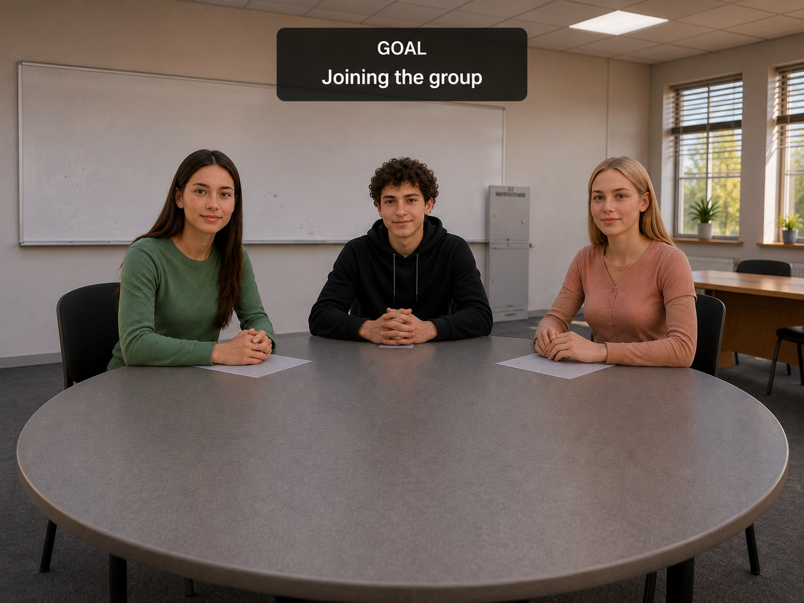

Specific, non-diagnostic guidance after practice.
AI-powered social-skills practice for schools
Help students practise real social situations—with feedback educators can trust.
SocialMind connects guided student practice, supportive AI feedback, educator insight, and optional immersive scenarios in one school-ready system.
Working prototype · Educational practice, not diagnosis · VR is optional
- Goals and practice themes
- Possible next activity
- 01Practice
- 02Feedback
- 03Reflect
- 04Educator insight
Working prototype
Designed for school use
English + Hebrew experience
Human judgment stays central
Why practice matters
Knowing what to do is not the same as being ready in the moment.
Students may understand the advice and still struggle to use it when a real social situation arrives.
Understanding comes first.
Lessons, advice, and encouragement help students understand what they could try.
Practice makes it usable.
Repeated, low-pressure rehearsal helps turn understanding into something a student can use.
Connected practice-to-support loop
One system turns practice into the next useful step.
Students practise, receive supportive feedback, reflect, and retry. Educators can review selected patterns and guide what comes next.

Strength noticed
You stayed in the conversation and responded clearly.
Try next
Ask one follow-up question.
Supportive · Specific · Non-diagnostic
After practice
Pause before the next attempt.
- What felt easier than expected?
- What would you like to try differently?
One small goal
Ask one follow-up question.
Practice summaryMinimum necessary insight
Human review
- Practice theme
- Starting and sustaining conversation
- Student goal
- Ask one follow-up question
- Possible next activity
- Retry with a new school scenario
This is a proposed workflow. Product, privacy, and governance details still require school review.
Product layers
A focused system, with each layer doing one job.
The student app, AI feedback, and educator workflow form the core. VR extends selected scenarios where immersion adds value.
Working prototype
Student application
A structured place to practise realistic school situations, reflect, retry, and carry one small goal into the next moment.
- Guided school scenarios
- Practice, reflection, and retry
- Personal goals and small real-world actions
- Progress direction in development
Choose
Practise
Reflect
Retry
In development
AI feedback layer
Responsive roleplay and supportive feedback designed around specific next steps, clear boundaries, and non-diagnostic summaries.
Proposed educator view
Educator dashboard
Selected practice patterns, possible next steps, and progress direction—with human review and minimum necessary information.
Optional layer
Immersive practice, only where it helps.
VR can add presence for selected situations, natural spoken responses, and supervised repetition. It is not required for the rest of SocialMind.
Selected situations
Spoken responses
Supervised use
Two connected journeys
Useful for students. Responsible for educators.
The student experience and educator workflow are designed to support each other without collapsing privacy or professional boundaries.
For students
Practice before the pressure is real.
- A safe place to practise and retry
- Realistic school situations
- Supportive, specific feedback
- Personal goals and small next actions
- Greater preparation before the real moment
The aim is preparation—not perfection.
For educators
Insight without replacing professional judgment.
- Understand what students are practising
- Review selected summaries instead of default raw transcripts
- Notice recurring areas where support may help
- Suggest or assign a next activity
- Keep professional judgment central
Educator views are proposed and still require workflow, privacy, and governance validation.
Evidence
Building evidence responsibly.
Technical activity, user testing, and educational impact are different kinds of evidence. SocialMind keeps those distinctions visible.
What exists now
A working prototype and product testing used to learn whether core interactions function as intended.
What testing informs
Student testing informs interaction design. Educator conversations inform workflow and implementation choices.
What we do not claim yet
SocialMind does not yet claim proven clinical, educational, or long-term social outcomes.
Formal impact evaluation is planned. We measure before we make claims.
Read our research approachPrivacy, safety, and trust
Responsible school use starts with clear boundaries.
These are design commitments and implementation requirements—not certifications.
Read Privacy & SafetyData minimisation
Collect only what a school-approved workflow needs.
Role-based access
Define who can see selected information and why.
Age-appropriate AI
Set clear behaviour, input, and output boundaries.
Educator oversight
Keep adults responsible for review and decisions.
Non-diagnostic output
Practice summaries must not label or diagnose students.
Professional judgment
SocialMind supports—not replaces—educators, counsellors, or professional care.
Exact collection, retention, deletion, security, and model-use practices must be confirmed before school deployment.
FAQ
Questions school teams ask first
Start with a conversation
See how SocialMind could support structured social-skills practice in your school.
Start with a product walkthrough, ask the hard questions, and decide together whether a pilot conversation makes sense.